Redesigning the Support module to better provide resources to users.
Team
Tim Avery, Sr. Director Of UX
Stephany Bradford, Lead User Experience Designer
Tools
Adobe XD
Google Suite
Timeline
Summer 2022 - 10 weeks
Overview
This summer, I worked with the UX, Product, and Engineering team to revamp the support
module on Predict, Pattern's data-driven eCommerce solution that helps brands succeed, to better provide
resources to users and organize documents on Pattern's end.
The support module is the help section for Pattern's Predict platform, designed to provide
users with the necessary documents to understand how to use the platform effectively.
The Problem
The current workflow has outdated UI, lacks an
organized
method for collecting or publishing resources, and has difficult navigation, making it
challenging for
users to efficiently access the information they need.
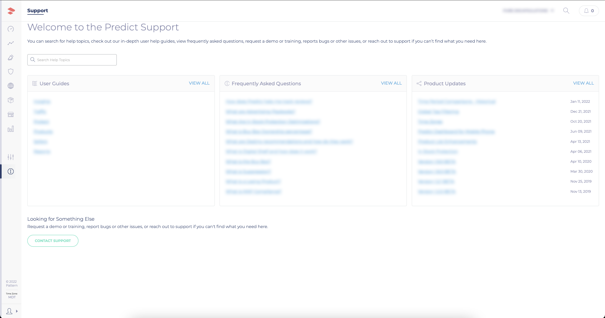
The Solution
My goal was to completely rebuild the support module to provide an experience
for
users that not only supplied the necessary assistance but also enhanced excitement and engagement.
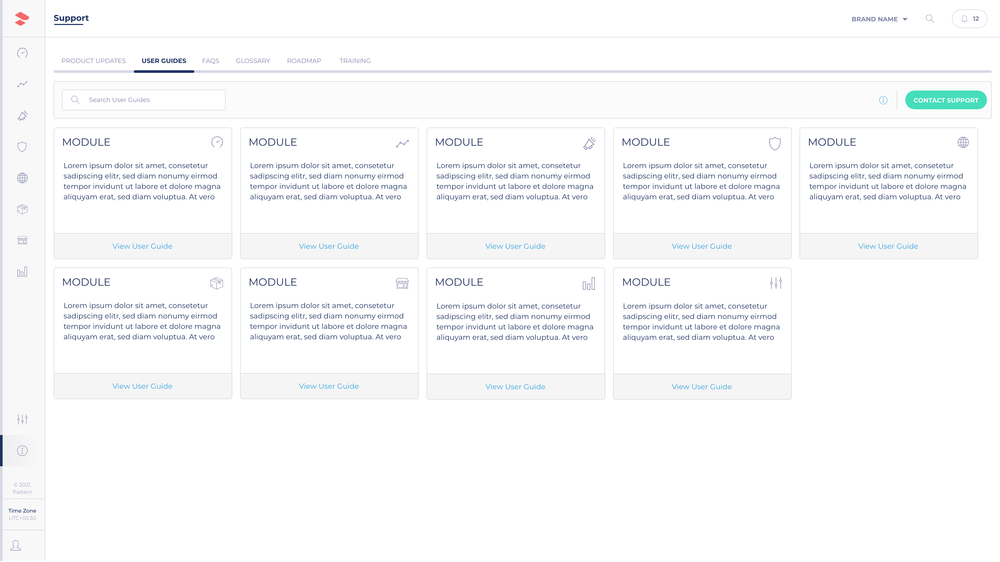
01. Ideate
My first step was to set up discovery calls with members of the product and UX team to
learn more about existing problems, ideate design solutions, and create user stories. From there I was able
to
define the users, the problem statement, and record ideas from the team before iterating on designs.
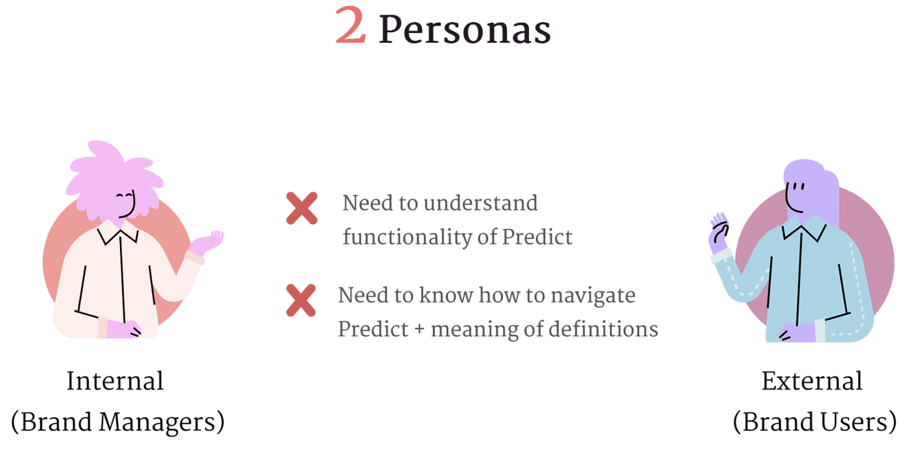
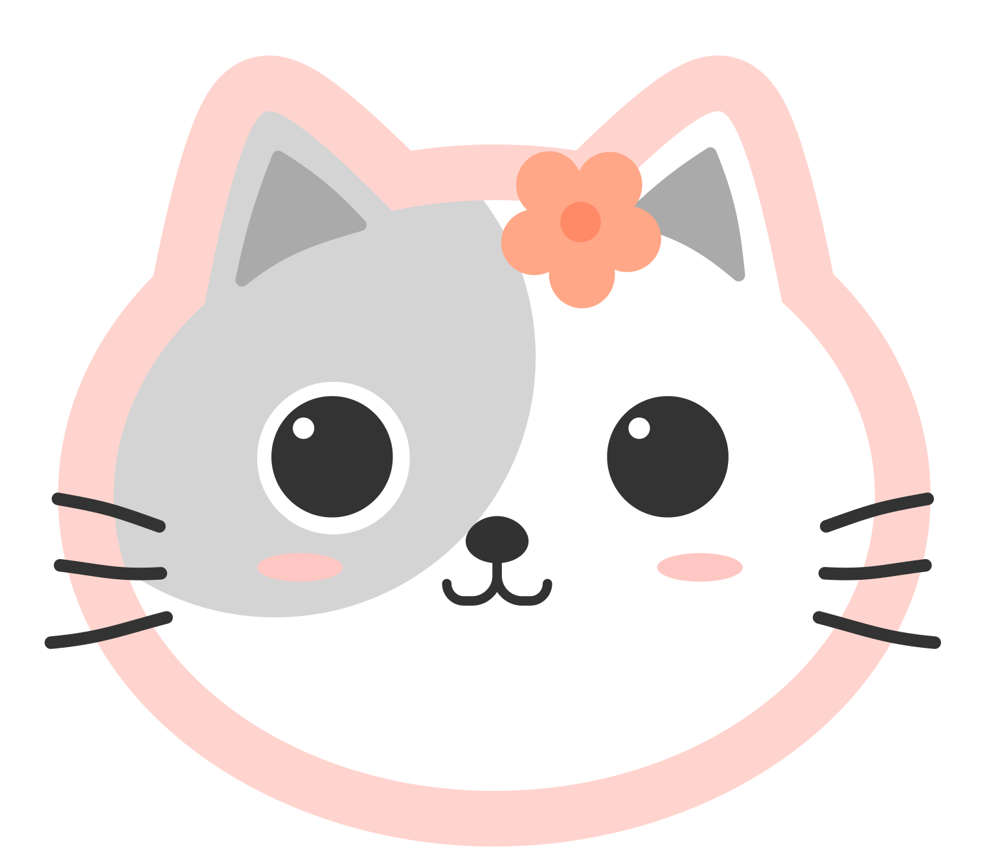
“As a brand manager, I need to be able to understand the functionality and
metrics that Predict provides in its Support section so that I can fully utilize each
tool
and
understand how the data applies to the products, but the Support module is outdated and the information
currently displayed is overwhelming and difficult to
read.
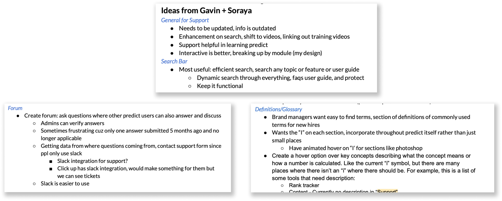
02. First Iteration
After conducting team interviews to gather pain points and potential feature ideas for
the current Support module, I created my first mockup of a more organized version.
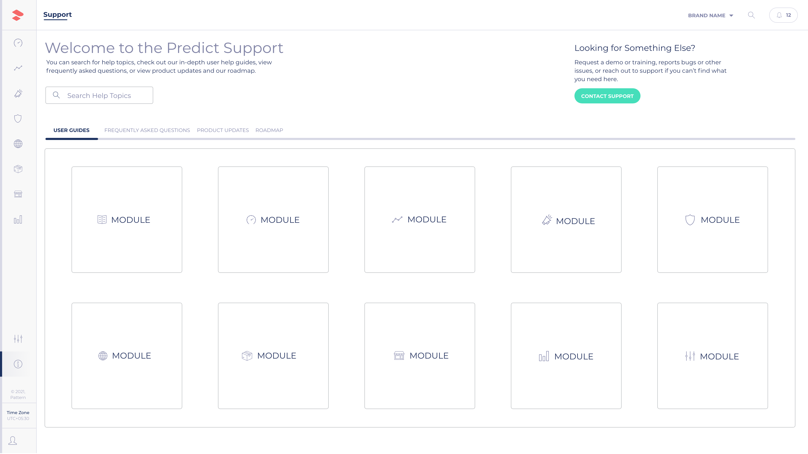
Users can now tab through each section of support, organizing resources and
simplifying navigation.
User guides are replaced with videos, making updates easier for Pattern and
information less overwhelming for users.
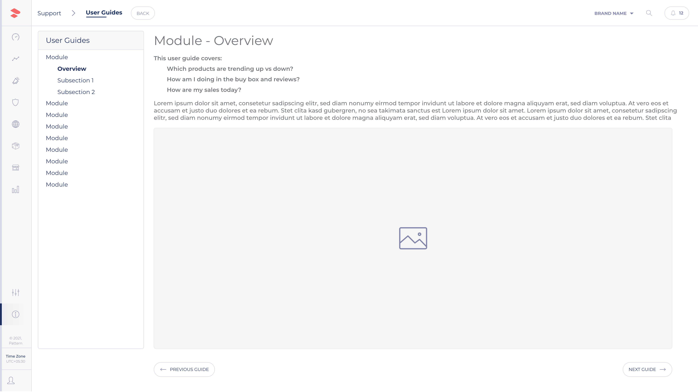
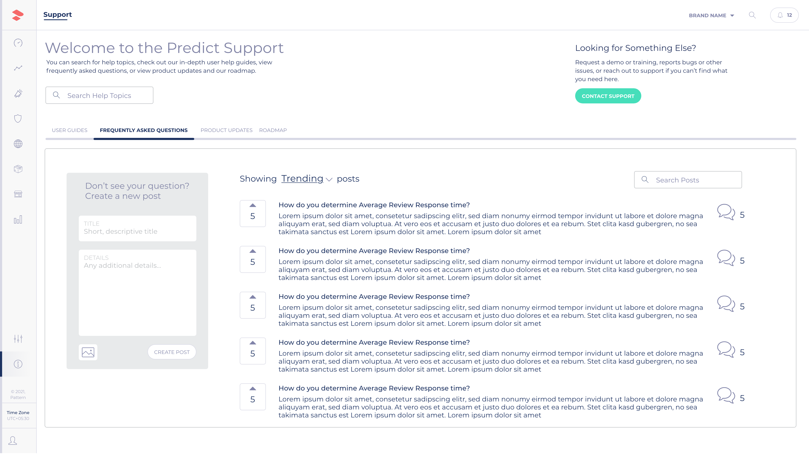
The FAQ is now a forum page where users can comment on questions and interact more
with Predict.
03. User Feedback💥
After my first iteration, I had several design
refinement
meetings with the UX and Product
teams. Though the general idea of my design was headed in the right direction, there was more to add
that
would
enhance the Support experience:
Adding a glossary section for a single location of important definitions.
Refining designs to follow Predict's design system and component library.
04. Second Iteration
In the second iteration, I incorporated feedback by aligning my designs with Pattern's
design system and adding more features based on new ideas.
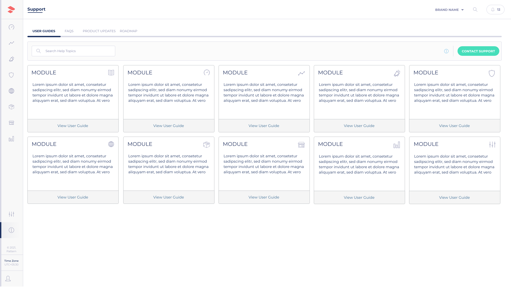
Updating the tabs, search, and contact support to be at the top of the page,
making
them more actionable.
Addition of glossary to the top of user guides, allowing easier access within user
guides.
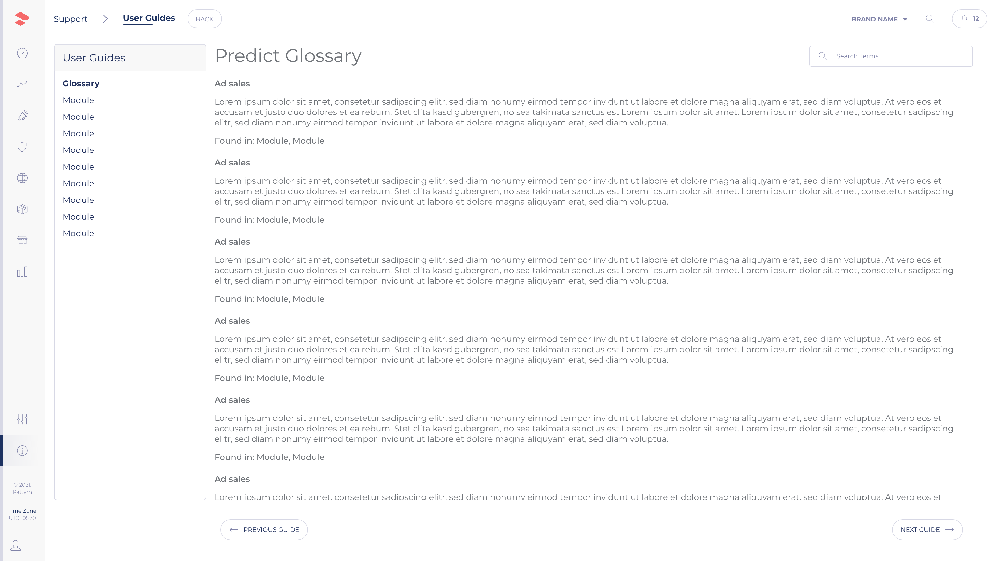
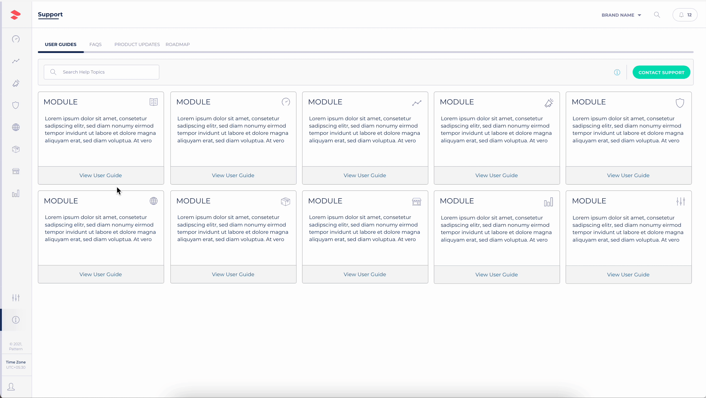
Using Slack and ClickUp integrations for the FAQs, Product Updates, and Roadmap to
increase organization on Pattern's end and simplify the process of updating the Support module.
05. Final Design
To gather feedback on features for the Support module, I set up calls and meetings with
users to review the prototype and ask follow-up questions. Collaborating with my team, I refined my designs,
incorporating new features, and ultimately rebuilt the Support module into a highly resourceful tool.
Product Updates
First page to excite users with real-time updates, uses Slack and
ClickUp for easy updates, and offers clear organization with interactive features.
User Guides
Labeled and organized for clarity, while module overview videos save time and effort in
learning
Predict and are easily updated by the Pattern team.
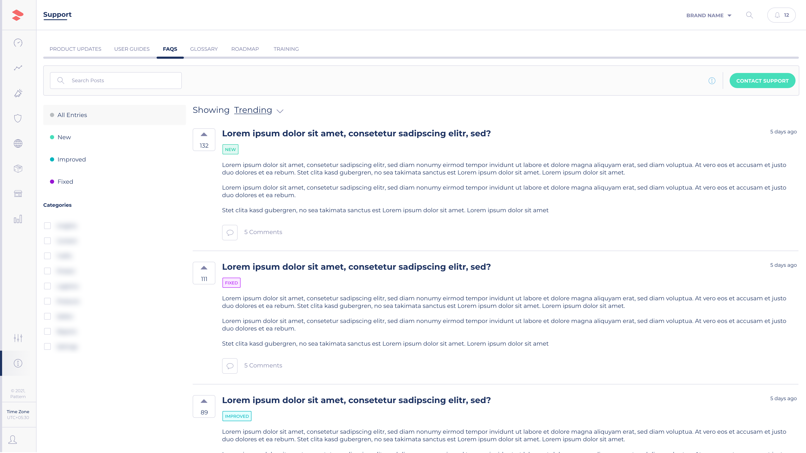
FAQs
Users engage more with posts in a forum-style interface, with improved filtering and search
options, and the ability to interact with definitions.
Glossary
Definitions are centralized and filterable for easy access, promoting user engagement through
upvoting and commenting.
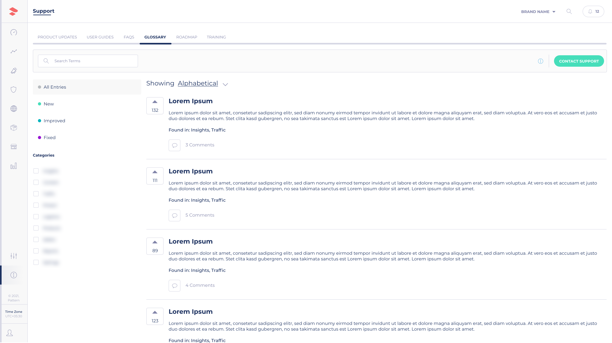
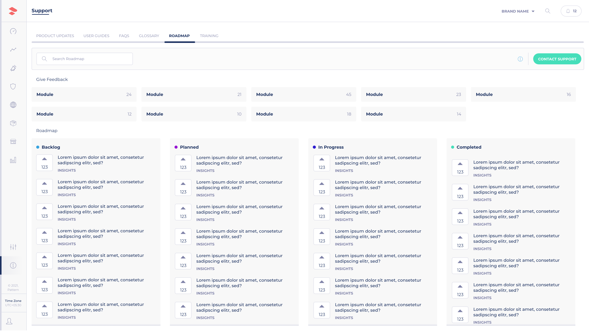
Roadmap
Users gain insights into future Predict features and can voice their opinions by commenting
and
upvoting features.
Training LMS
Provides in depth video guides, training quizzes, and formal Predict certificates.
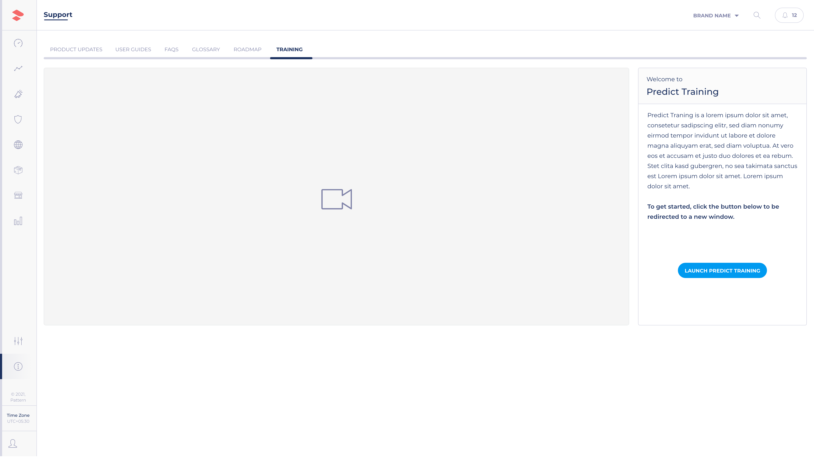
Business Impact
The Support Revamp allowed for the support section to not only become a valuable source
for
help, but also a way for users to have their voices heard and influence the future of Predict. This will
ultimately increase user engagement and help users understand everything needed to help their brands
succeed.
Reflection
This project was one that I wanted to work on day one of being at Pattern, as I first
hand
experienced hardship in learning about Predict. However, this was also my first time being in charge of my
own
project and taking initiative as to the project roadmap. But through the guidance of my team and everyone
else
at Pattern, I was able to transform the Support section into something worthwhile. My main learning through
this
project was not only how to take charge, but to also focus more on the user and fully understand their pain
points before designing.